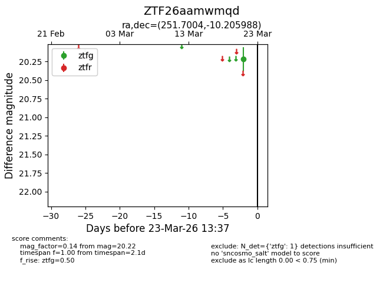
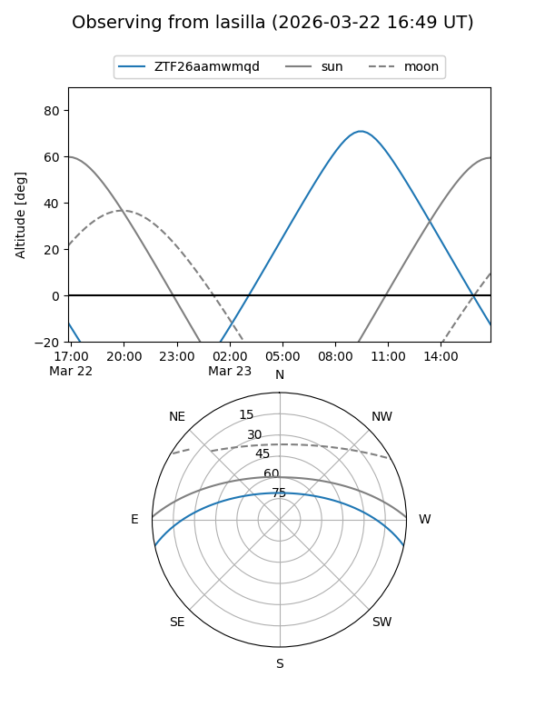
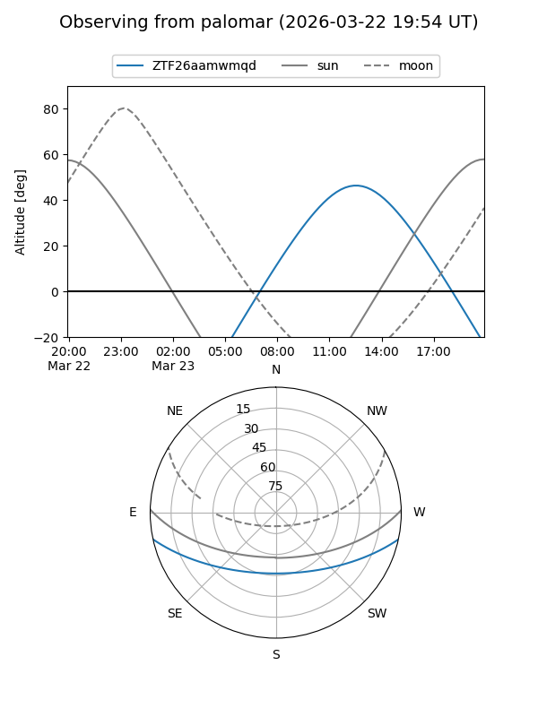

ZTF26aamwmqd
Target ZTF26aamwmqd at 2026-03-23 13:40
Aliases and brokers:
FINK: link
Lasair: link
ALeRCE: link
alt names
ZTF26aamwmqd (ztf,fink_ztf)
Coordinates:
equatorial (ra, dec) = 251.7004,-10.20599
equatorial (HMS+DMS) = 16:46:48.10,-10:12:21.56
galactic (l, b) = (8.0901,+21.86449)
Flags:
Photometry:
last ztfg=20.22
1 ztfg detections
Lightcurve

Visibility


Additional plots